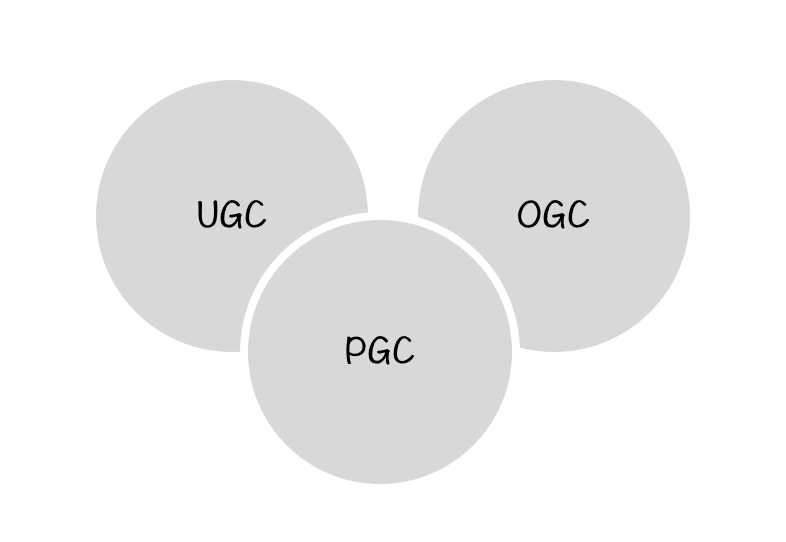
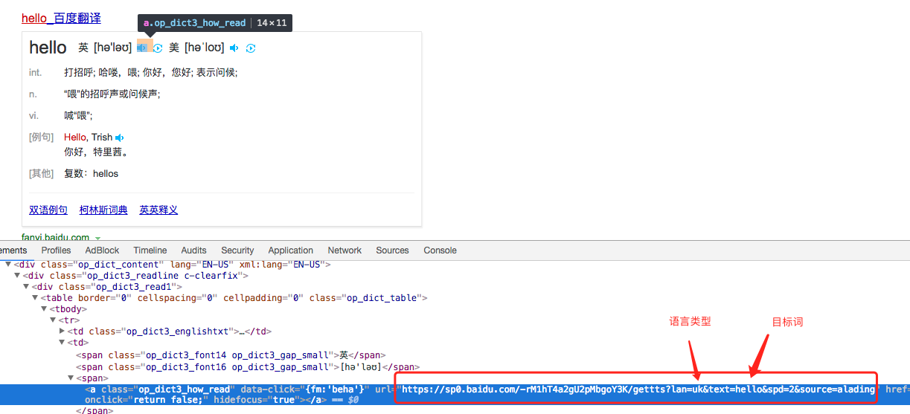
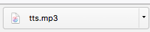
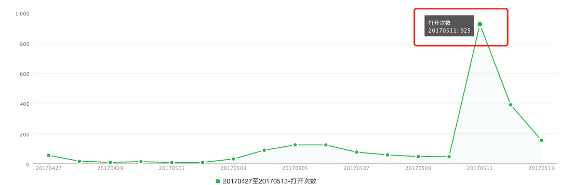
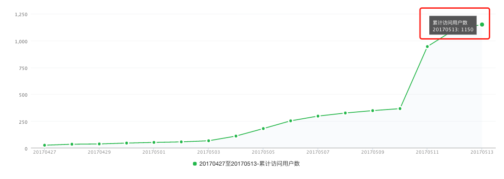
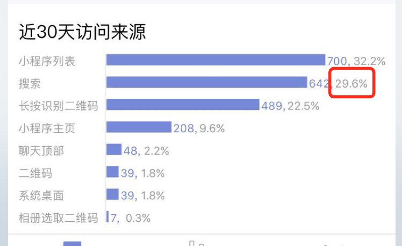

我做的一个小程序《看图识字》在4月27日上线。在线上运行也十来天了，这里做个小结。总结一下为何要做这个、做这个遇到的一些问题以及做一个产品（姑且算一个产品吧）的感悟。
为何要做这个小程序？
主要是因为小孩即将出生，给他做个小东西做个纪念，同时亲戚朋友也有需要的，所以为了解决用户的需求，就产生了做个小程序的想法。可是这个产品的定位还是很尴尬，因为这个是手机上的程序，不太建议幼儿玩。等到快上小学的时候，认认字还是挺好的，可还是得注意时长。
同时也是为了练练手。
这个小程序的雏形也是参考了一些别的产品，这个东西没什么复杂的东西，基本都是我YY的。主要是我看着开心就行，毕竟我是产品（哈哈），但在新的版本里也加了意见反馈功能希望得到用户的反馈。
遇到的一些问题
####内容：
任何一个产品（网站、APP,小程序，桌面应用等）一定是有内容填充的，而内容的来源是第一个要解决的问题。
根据内容来源的不同，产品的形态又分为如下三种UGC、OGC、PGC:

- UGC：User-generated Content，用户生产内容
- PGC：Professionally-generated Content，专业生产内容
- OGC：Occupationally-generated Content，职业生产内容
从定义来看《看图识字》这个小程序属于PGC，出于个人”爱好”，义务的贡献。
我解决内容问题用了一个想法两种途径：
- 想法：自己找人画或者自己学sketch画 ❌
如果要是按照这个想法做不管是找设计老司机还是我自己搞，估计这个小程序还没上线。如果一个东西拖的太久，慢慢的就失去了做下去的动力，所以我就放弃这个路子。
- 另辟蹊径，既然不能重头开始画，那肯定得找现成的，所以我就找网上的图片，图片得是一个系列的也就是画风得一致，别一张一个样，然后就找到一个提供免费文档的地方。里面确实有许多图片，找到一个水果系列的一共25张，我就开始一张一张的右键查看地址下载，等我下载几张后，发现很机械。最后临时找了一个python爬虫教程写了一个简易的爬虫下载完了图片。
估计手动下载最多5分钟，可是写爬虫用了半小时😭😭😭。
- 爬了两个系列之后，就匆匆上线了。用了一两天，发现图片是在是太渣，然后我就到万能的淘宝去寻觅，最后在和卖家的讨论（撕逼）下，把电子版的图片发我了（有可能侵权）。然后就更新了一版加入了新的系列，图片的质量好点了。不在是土八路（GCD万岁），而是国军穿戴整体。
###语音
第二版本加的语音功能，当时我的想法是搜一下网上有没有现成的API直接调用一下，可是没搜到。最后想到的是百度翻译

可是等我把：
https://sp0.baidu.com/-rM1hT4a2gU2pMbgoY3K/gettts?lan=uk&text=hello&spd=2&source=alading
复制到浏览器里时，居然把mp3下载下来了：

可这并不是我想要的，我想的是直接发音。最后搜到一篇文章：http://dwz.cn/5Xia0K 里面有价值的就是一个地址：
http://tts.baidu.com/text2audio?lan=en&pid=101&ie=UTF-8&text=hello&spd=2
把上面地址复制到浏览器后出现了我想要的：

就在我写的时候又发现有道翻译也有一个不错的发音API，自己去找吧！
感悟
从开始有想法到写好第一版本共用2天，因为功能简单同时也是为了先有个大概的东西就匆匆的上线了。如果当时没有那么快上线，若一开始就考虑很多东西，估计已经废掉了。如果快、糙、猛的先上一版，不巧还有用户在用就会不断督促自己修改、优化。
现在也每天看看数据，虽然也有些数据看不懂：
在被”知晓程序”公众号一周最新《晓榜》16期推送后访问达到顶峰，然后就一直下滑 😭 幸福来得突然也不是一件好事。

欣慰的是累计用户目前一直是增加的目前总人数是：1150

还有一个数据挺好，有29.6%的访问来自于搜索，说明起的名字还是可以的同时需求也是存在的：

小程序：